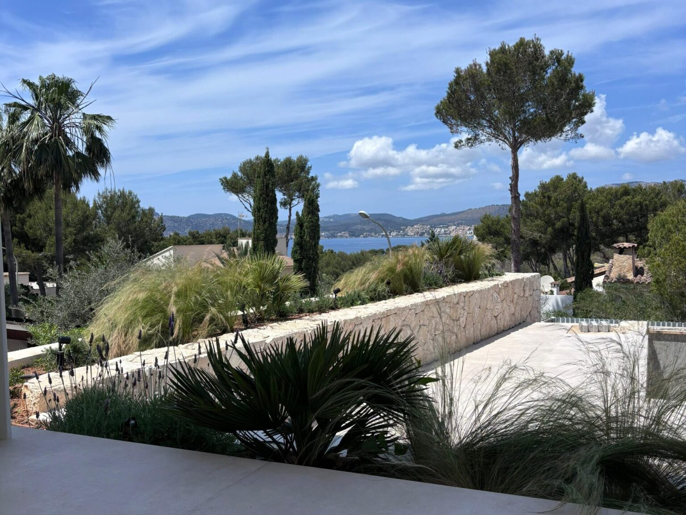
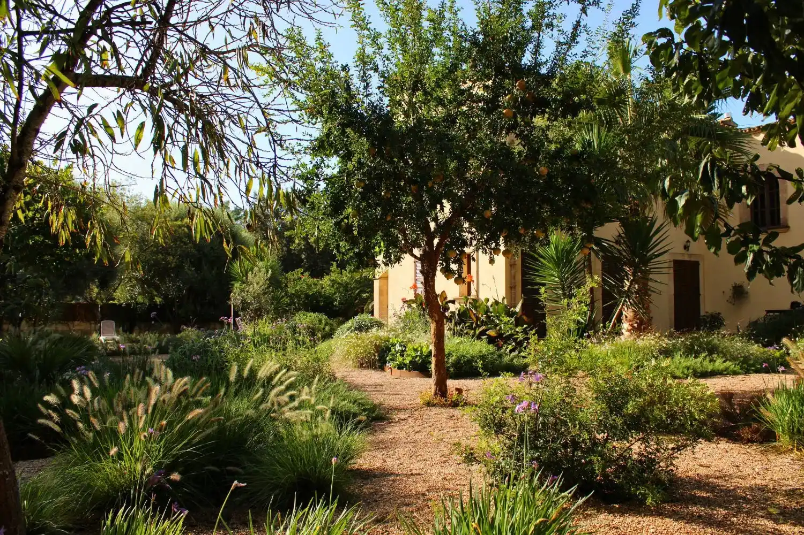
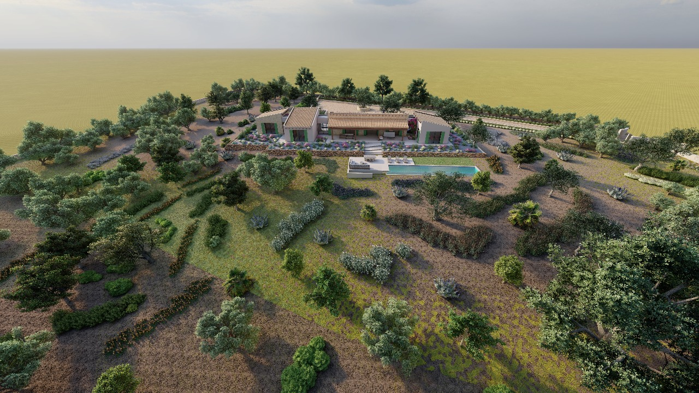

Inspired by the authentic beauty and spirit of Mallorca

This garden frames the Serra de Tramuntana as its true protagonist, blending color, movement, and open spaces to create a serene, contemplative Mediterranean landscape.
Explore Project →
A sustainable garden in a warm, dry climate using drought-resistant plants with low water requirements, preserving native species while reinforcing Mallorcan identity.
Explore Project →
A small ravine garden respecting natural slopes, connecting the residence with the surrounding Mediterranean landscape without altering elevations.
Explore Project →
An elegant terraced mountain design structured around level changes, detailed 2D architectural mapping, and an extensive botanical species palette.
Explore Project →
S’Estepa’s projects focus on the relationship between people and the land, using endemic and exotic species to create elegant gardens that respect nature’s rhythm.
"Gardens can take years to fully develop into the ultimate concept, so it's important to take it slow and respect the rhythm of nature" — Pedro Campaner
We provide a comprehensive approach to landscaping in Mallorca, focusing on the creation and long-term maintenance of living ecosystems for villas and holiday residences. Our team oversees the entire process—from design and construction to technical irrigation and planting. We ensure a seamless experience, managing every detail in English, Spanish, and German.
Exclusive tailor-made botanical environments designed to enrich luxury residences, holiday homes, and fincas across Mallorca.
View ProjectsHigh-fidelity conceptual drawings, technical layouts, and virtual 3D renders that breathe spatial order and structure into your vision.
Meet Our ArchitectRigorous site development, structural earthworks, dry-stone walling, and planting executed by our dedicated team of local professionals.
Meet Site ManagerXeriscape planting schemes, water resource planning, and intelligent drip irrigation systems designed for ultimate sustainability.
Request ConsultationA highly refined, collaborative roadmap from initial meeting to a fully realized living environment.
An initial meeting to align your vision with the site’s potential. We evaluate the landscape’s unique features, orientation, and your lifestyle requirements to establish the foundation of the project. Start the Conversation
Translating our initial dialogue into a visual narrative. We develop a preliminary concept outlining the spatial layout, material palette, and key botanical features. Depending on the project’s complexity, we provide 2D scaled plans or high-fidelity 3D renders to bring the vision to life.
A collaborative dialogue to perfect every detail. We refine the conceptual vision based on your feedback, ensuring the design aligns seamlessly with your lifestyle, functional requirements, and technical specifications.
Once the design concept is finalized, we develop the comprehensive technical plans and specifications required for execution. This stage defines every constructive detail, from the precise selection of hardscape materials to the complete botanical palette, ensuring a rigorous roadmap for the build.
Our dedicated local team brings the project to life, managing the entire construction and planting process on-site. We oversee every technical specification to ensure the garden is delivered to our exacting standards, providing a seamless transition from the final plans to a living landscape.
Some gardens by S’Estepa Design

We curate our visual archives with original high-fidelity photographs documenting structural details, botanical layers, and regional dry-stone integration across the island of Mallorca.
Villas & Holiday Homes • Garden Design • Build • Care
Request Your Consultation